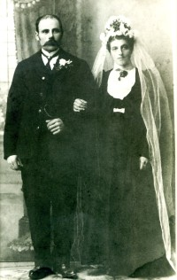

Olav Pedersen Westgård
M, #15577, f. 27 mars 1921, d. 13 juli 1998
Foreldre
| Datter | Randi Westgård |
| Datter | Gunn Oliva Olavsdatter Westgård+ |
| Sønn | Harald Westgård |
Biografi
Olav Pedersen Westgård ble født den 27 mars 1921. Han giftet seg med
Gunvor Rebekka Hagbartsdatter Hartvigsen den 2 juni 1941. Han døde den 13 juli 1998. Han ble gravlagt den 21 juli 1998 på/i Salsbruket kirkegård, Nærøy, Nord-Trøndelag.
| Sist redigert |
25 august 2018 00:00:00 |
Gunvor Rebekka Hagbartsdatter Hartvigsen
K, #15578, f. 19 januar 1920, d. 17 september 2011
Foreldre
| Datter | Randi Westgård |
| Datter | Gunn Oliva Olavsdatter Westgård+ |
| Sønn | Harald Westgård |
Biografi
Gunvor Rebekka Hagbartsdatter Hartvigsen ble født den 19 januar 1920 på/i Sortland, Nordland. Hun giftet seg med
Olav Pedersen Westgård den 2 juni 1941. Hun døde den 17 september 2011 på/i Nærøy bo- og behandlingssenter, Kolvereid, Nærøy, Nord-Trøndelag. Hun ble gravlagt den 23 september 2011 på/i Salsbruket kirkegård, Nærøy, Nord-Trøndelag.
Gunvor Rebekka Hagbartsdatter Hartvigsen was also known as Gunvor Rebekka Westgård. Hun ble døpt den 11 juli 1920 på/i Sortland, Nordland.
| Sist redigert |
25 august 2018 00:00:00 |
Anton Peder Andreassen Westgård
M, #15579, f. 23 februar 1876, d. 4 juli 1963
Foreldre

Anton Peder Petra Westgård
Biografi
Anton Peder Andreassen Westgård ble født den 23 februar 1876 på/i Salsbruket; Kolvereid, Nærøy, Nord-Trøndelag. Han giftet seg med
Petra Olsdatter Lye i 1907.

Han døde den 4 juli 1963 på/i Namsos, Nord-Trøndelag. Han ble gravlagt den 10 juli 1963 på/i Namsos kirkegård, Namsos, Nord-Trøndelag.
Anton Peder Andreassen Westgård ble døpt den 13 juni 1876 på/i Kolvereid, Nærøy, Nord-Trøndelag. Han eide i 1943 Lundsmo 14/26, Vemundvik, Namsos, Nord-Trøndelag.
| Sist redigert |
9 april 2025 23:05:15 |
Petra Olsdatter Lye
K, #15580, f. 9 mai 1882, d. 6 mars 1965
Foreldre
Anton Peder Petra Westgård
Biografi
Petra Olsdatter Lye ble født den 9 mai 1882. Hun giftet seg med
Anton Peder Andreassen Westgård i 1907.
Hun døde den 6 mars 1965 på/i Namsos, Nord-Trøndelag. Hun ble gravlagt den 12 mars 1965 på/i Namsos kirkegård, Namsos, Nord-Trøndelag.
Petra Olsdatter Lye was also known as Petra Westgård.
| Sist redigert |
9 april 2025 23:05:52 |
Hagbart Emil Laurits Hartvigsen
M, #15581, f. 7 mars 1884, d. 28 januar 1966
Biografi
Hagbart Emil Laurits Hartvigsen ble født den 7 mars 1884 på/i Sortland, Nordland. Han giftet seg med
Trine Trine. Han døde den 28 januar 1966. Han ble gravlagt den 4 februar 1966 på/i Dalsand 2 kirkegård, Sortland, Nordland.
| Sist redigert |
24 juli 2012 00:00:00 |
Trine Trine
K, #15582, f. 3 mai 1884
Biografi
Trine Trine was also known as Trine Hartvigsen.
| Sist redigert |
24 juli 2012 00:00:00 |
Johanna Antonsen
K, #15584, f. 1 mars 1898, d. 20 oktober 1958
Foreldre
Biografi
Johanna Antonsen ble født den 1 mars 1898 på/i Galtnes 9/1, Galtvig; Kolvereid, Nærøy, Nord-Trøndelag. Hun giftet seg med
Johan Jentoft Lorentsen Skaftnes omtrent 1926. Hun døde den 20 oktober 1958 på/i Nærøy, Nord-Trøndelag.
Johanna Antonsen was also known as Johanna Skaftnes.
| Sist redigert |
24 juli 2012 00:00:00 |
| Slektskap | 7-menning 2 ganger forskjøvet til Håkon Wahl |
Otto Johansen
M, #15585, f. 6 desember 1926, d. oktober 1927
Foreldre
Biografi
Otto Johansen ble født den 6 desember 1926 på/i Kolvereid, Nærøy, Nord-Trøndelag. Han døde i oktober 1927 på/i Kolvereid, Nærøy, Nord-Trøndelag.
| Sist redigert |
24 juli 2012 00:00:00 |
| Slektskap | 4-menning 2 ganger forskjøvet til Håkon Wahl |
Karle Johansen Skaftnes
M, #15586, f. 1 april 1928, d. 1 august 1998
Foreldre
Familie: Eva Magna Bjørhusdal (f. 21 juni 1929, d. 18 januar 2026)
| Datter | Sissel Marit Skaftnes+ |
| Sønn | Erling Skaftnes |
Biografi
Karle Johansen Skaftnes ble født den 1 april 1928 på/i Nærøy, Nord-Trøndelag. Han døde den 1 august 1998. Han ble gravlagt på/i Trones kirkegård, Namsskogan, Nord-Trøndelag.
| Sist redigert |
20 januar 2026 07:43:51 |
| Slektskap | 4-menning 2 ganger forskjøvet til Håkon Wahl |
Tore Johan Johansen Skaftnes
M, #15588, f. 5 januar 1931, d. 10 juli 1983
Foreldre
Familie: Inger Johanne Jonassen
| Datter | Janne Marit Skaftnes |
| Datter | Wenche Linea Skaftnes |
| Datter | Turid Irene Skaftnes |
| Sønn | Ståle Skaftnes |
| Datter | Signe Johanne Skaftnes |
Biografi
Tore Johan Johansen Skaftnes ble født den 5 januar 1931 på/i Nærøy, Nord-Trøndelag. Han giftet seg med Inger Johanne Jonassen. Han døde den 10 juli 1983. Han ble gravlagt den 14 juli 1983 på/i Ranem kirkegård, Overhalla, Nord-Trøndelag.
| Sist redigert |
24 juli 2012 00:00:00 |
| Slektskap | 4-menning 2 ganger forskjøvet til Håkon Wahl |
Signe Johansdatter Skaftnes
K, #15590, f. 6 januar 1936, d. 23 september 2016
Foreldre
Familie: Arne Hagen
| Sønn | Stein Arve Hagen+ |
| Sønn | Ove Morten Hagen |
Biografi
Signe Johansdatter Skaftnes ble født den 6 januar 1936 på/i Kolvereid, Nærøy, Nord-Trøndelag. Hun giftet seg med Arne Hagen i 1956. Hun døde den 23 september 2016 på/i Sykehuset Namsos, Namsos, Nord-Trøndelag. Hun ble gravlagt den 30 september 2016 på/i Salsbruket kirkegård, Nærøy, Nord-Trøndelag.
Signe Johansdatter Skaftnes was also known as Signe Hagen. Hun bodde på/i Salsbruket; Kolvereid, Nærøy, Nord-Trøndelag. Hun bodde på/i Abelvær, Nærøy, Nord-Trøndelag.
| Sist redigert |
27 september 2016 00:00:00 |
| Slektskap | 4-menning 2 ganger forskjøvet til Håkon Wahl |
Arne Konrad Skaftnes
M, #15591, f. 2 juli 1940, d. 17 november 2024
Foreldre
| Datter | Marit Johanne Skaftnes+ |
| Datter | Ann-Rita Skaftnes (f. 12 november 1968, d. 11 juli 2019) |
Biografi
Arne Konrad Skaftnes ble født den 2 juli 1940 på/i Nærøy, Nord-Trøndelag. Han giftet seg med
Reidun Helen Johanne Bjørklund. Han døde den 17 november 2024 på/i Namsos, Trøndelag. Han ble gravlagt den 28 november 2024 på/i Namsos kirke, Namsos, Trøndelag.
Arne Konrad Skaftnes bodde på/i Namsos, Nord-Trøndelag.
| Sist redigert |
21 november 2024 23:58:45 |
| Slektskap | 4-menning 2 ganger forskjøvet til Håkon Wahl |
Johan Peter Rolandsen
M, #15592, f. 1832, d. 16 mars 1877
Foreldre
Biografi
Johan Peter Rolandsen ble født i 1832 på/i Inderøy, Nord-Trøndelag. Han giftet seg med
Ingeborg Anna Hallesdatter den 25 juli 1864 på/i Foldereid kirke, Foldereid, Nærøy, Nord-Trøndelag. Han døde den 16 mars 1877.
Johan Peter Rolandsen bodde på/i Skaftnesmoen; Foldereid, Nærøy, Nord-Trøndelag.
| Sist redigert |
12 februar 2021 00:00:00 |
| Slektskap | Bror av tippoldefar/mor til Håkon Wahl |
Ingeborg Anna Hallesdatter
K, #15593, f. 17 juli 1842, d. 24 august 1927
Foreldre
Biografi
Ingeborg Anna Hallesdatter ble født den 17 juli 1842 på/i Nærøy, Nord-Trøndelag. Hun giftet seg med
Johan Peter Rolandsen den 25 juli 1864 på/i Foldereid kirke, Foldereid, Nærøy, Nord-Trøndelag. Hun giftet seg med
Jens Eliassen i 1884. Hun døde den 24 august 1927.
| Sist redigert |
12 februar 2021 00:00:00 |
Halle Olsen
M, #15594, f. 1814, d. 19 august 1900
Foreldre
Biografi
Halle Olsen ble født i 1814 på/i Høylandet, Nord-Trøndelag. Han giftet seg med
Eleonora Mathiasdatter Norem den 9 juni 1844. Han døde den 19 august 1900 på/i Nærøy, Nord-Trøndelag.
Halle Olsen was also known as Halle Berg.
| Sist redigert |
24 juli 2012 00:00:00 |
Susanna Ingebrigtsdatter Bogan
K, #15595, f. 1817
Biografi
Susanna Ingebrigtsdatter Bogan ble født i 1817.
| Sist redigert |
24 juli 2012 00:00:00 |
Ole Ingebrigtsen Mevassvik
M, #15596, f. omtrent 1780, d. 6 oktober 1822
Foreldre
Biografi
Ole Ingebrigtsen Mevassvik ble født omtrent 1780 på/i Høylandet, Nord-Trøndelag. Han giftet seg med
Anne Fredriksdatter Viken i 1800. Han døde den 6 oktober 1822 på/i Bjørlimoen (plass), Bjørlien, Høylandet, Nord-Trøndelag.
Ole Ingebrigtsen Mevassvik was also known as Ole Bjørlien. Han was also known as Ole Bjørlimoen. Han bygslet omtrent 1808 Bjørlimoen (plass), Bjørlien, Høylandet, Nord-Trøndelag, av Johannes Johnsen Bjørlia.
| Sist redigert |
1 august 2022 23:16:35 |
Sigvard Berg Georgsen Sjølstad
M, #15597, f. 27 januar 1877, d. 29 desember 1937
Foreldre
Biografi
Sigvard Berg Georgsen Sjølstad ble født den 27 januar 1877 på/i Sjølstad; Foldereid, Nærøy, Nord-Trøndelag. Han giftet seg med
Lina Jensdatter Knoph den 11 desember 1912. Han døde den 29 desember 1937 på/i Bindal, Nordland.
Sigvard Berg Georgsen Sjølstad hadde også sagbruk og trelastforretning Fiskerosen, Røytvold, Bindal, Nordland.
| Sist redigert |
18 juli 2022 18:39:52 |
| Slektskap | 4-menning 2 ganger forskjøvet til Håkon Wahl |
Eleonora Mathiasdatter Norem
K, #15598, f. 4 juni 1820, d. 8 august 1905
Foreldre
Biografi
Eleonora Mathiasdatter Norem ble født den 4 juni 1820 på/i Inderøy, Nord-Trøndelag. Hun giftet seg med
Halle Olsen den 9 juni 1844. Hun døde den 8 august 1905 på/i Kolvereid, Nærøy, Nord-Trøndelag.
| Sist redigert |
24 juli 2012 00:00:00 |
Ingebrigt Olsen Aar
M, #15599, f. 1771, d. 16 desember 1847
Foreldre
Biografi
Ingebrigt Olsen Aar ble født i 1771 på/i År, Nærøy, Nord-Trøndelag. Han giftet seg med
Anne Eriksdatter i 1799. Han døde den 16 desember 1847 på/i Bogan; Foldereid, Nærøy, Nord-Trøndelag.
| Sist redigert |
24 juli 2012 00:00:00 |
Anne Eriksdatter
K, #15600, f. 1777, d. 8 august 1841
Foreldre
Biografi
Anne Eriksdatter ble født i 1777. Hun giftet seg med
Ingebrigt Olsen Aar i 1799. Hun døde den 8 august 1841 på/i Bogan; Foldereid, Nærøy, Nord-Trøndelag.
Anne Eriksdatter was also known as Anne Kongsmo.
| Sist redigert |
10 april 2013 00:00:00 |
{kind=link}